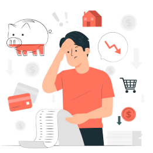

Imagínate que estás aplicando todas las recomendaciones de tu profesor de economía, logrando ahorrar dinero mes a mes. Eres realmente disciplinado con tus finanzas, y siempre logras acumular algo de dinero. Pero, ¿esto significa que nunca enfrentarás la necesidad de solicitar dinero prestado? ¡Qué más quisiéramos! La realidad es que a veces no podemos evitarlo.
¿Qué significa endeudarse?
| Cuando hablamos de deuda, nos referimos a una situación en la que una persona obtiene dinero de otra parte con el objetivo de adquirir bienes o servicios en el presente, con el compromiso de devolver ese dinero más adelante, generalmente con intereses adicionales. |

¿Cómo se relacionan las deudas con el ahorro?
La deuda puede entenderse como lo opuesto al ahorro. Mientras que el ahorro implica reservar dinero hoy para consumir en el futuro, la deuda nos permite disfrutar ahora a cambio de gastar más en el futuro.
Por ejemplo, supongamos que quieres comprar un coche cuyo precio es de 10.000 euros. Si decides ahorrar 500 euros al mes, te tomaría aproximadamente 20 meses acumular la cantidad necesaria. Sin embargo, si optas por solicitar un préstamo por los 10.000 euros, podrías tener el coche de inmediato, aunque después tendrías que dedicar 20 meses a devolver el préstamo, con intereses incluidos.
¿Es conveniente disfrutar de los bienes antes de pagarlos?
Aunque parecería ideal disfrutar de un bien sin esperar, el principal problema de las deudas es que, en realidad, no estás evitando el esfuerzo del ahorro, sino solo posponiéndolo. Al final, la cantidad que tendrás que devolver será mayor debido a los intereses que se aplican al dinero prestado. Es decir, aunque consigas lo que necesitas hoy, terminarás pagando más de lo que el bien costaba originalmente. Esto implica que, a largo plazo, te puede resultar más difícil mantener tus finanzas equilibradas. A pesar de todo, es común que las personas recurran a la deuda para cubrir grandes inversiones, como la compra de una vivienda o de un coche. Estas adquisiciones representan gastos elevados que son complicados de pagar de una sola vez. En casos de necesidad, pedir un préstamo puede ser útil, siempre que se haga de manera responsable y se tengan en cuenta las implicaciones a futuro.
Ventajas de endeudarse
Uno de los beneficios de acceder a una deuda es que te permite disponer de dinero de forma inmediata, lo cual puede ser útil para atender emergencias, adquirir bienes necesarios o mejorar tu calidad de vida en el presente.
Desventajas de endeudarse
No obstante, endeudarse tiene una serie de inconvenientes que deben considerarse con atención:
- Aumento de los gastos familiares: Al comprometerte con una deuda, añades pagos obligatorios a tu presupuesto, lo cual puede limitar tus recursos para otras necesidades o deseos.
- Costos adicionales: Cuando solicitas dinero prestado, no solo debes devolver la cantidad solicitada, sino también los intereses, lo que significa que terminarás pagando más dinero del que inicialmente recibiste.
Estos aspectos negativos no son insignificantes. De hecho, muchas familias enfrentan graves problemas financieros porque los pagos de sus deudas terminan siendo tan altos que no pueden cubrirlos. En situaciones extremas, esto ha llevado a algunas familias a perder sus propiedades o incluso sus hogares.